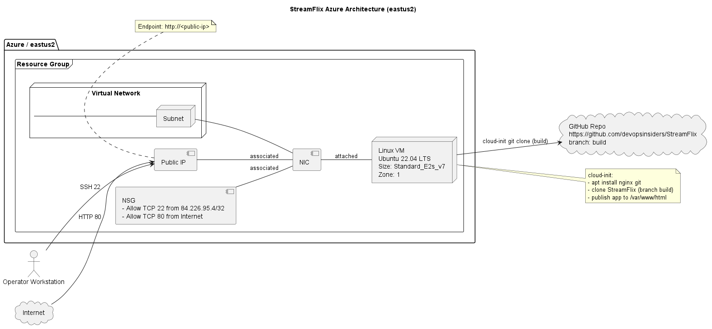

Run: mythesis-streamflix-eastus2-20260617-185124
Endpoint: http://172.206.48.114
Content verification: PASS (app markers detected; non-default nginx page)

{
"run": {
"start_iso": "2026-06-17T18:51:24.2436075Z",
"end_iso": "2026-06-17T19:22:00.6293922Z",
"end_to_end_duration_seconds": 1836
},
"context": {
"region": "eastus2",
"vm_size": "Standard_E2s_v7",
"resource_group": "rg-mythesis-streamflix-20260617",
"vm_name": "vm-mythesis-streamflix-20260617",
"public_ip": "172.206.48.114",
"application_url": "http://172.206.48.114"
},
"phase_durations_seconds": {
"workspace_creation": 0,
"normalization": 355,
"architecture_mapping": 8,
"module_discovery": 0,
"module_parameterization": 0,
"terraform_assembly": 10,
"ci_cd_generation": 0,
"validation": 475,
"documentation": 132
},
"interventions": {
"human_interventions_required": 7,
"configuration_corrections_required": 4,
"approval_cycles_required": 3,
"first_time_success": false
},
"quality": {
"automation_coverage_percent": null,
"reproducibility_score": null
}
}
{
"terraform_fmt": true,
"terraform_init": true,
"terraform_validate": true,
"terraform_plan": true,
"terraform_apply": true,
"vm_provisioning_state": "Succeeded",
"cloud_init_status_done": true,
"nginx_active": [
"active"
],
"http_local_status_200": [
],
"http_public_status_200": true,
"public_content_verification_pass": true,
"ssh_source_cidr_restricted": true,
"public_ip": "172.206.48.114",
"application_url": "http://172.206.48.114",
"evidence_files": [
"architecture.png",
"cloud-init-summary.txt",
"http-check.txt",
"http-body.txt",
"plan-output.txt",
"apply-output.txt",
"vm-runtime-check.txt"
]
}